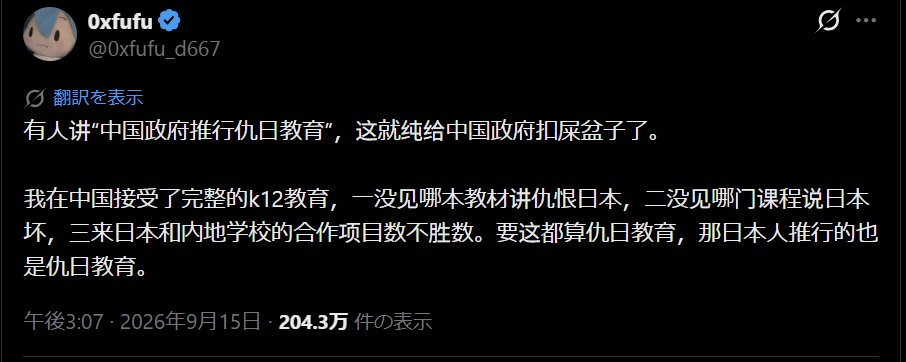

正好封面这条推文的讨论热度过去了，现在我想说说自己的想法。
我一直在自己的教育过程中坚守着一个原则：避免对所有人输出带有歧视性质的内容。这点在我所有的课程教学上都是一以贯之的。
因为我知道，我们在学任何课程的时候都不可避免地被意识形态影响，而对于我所在的文科专业则是更甚一层。但是我们很多接受教育的人都没怎么注意意识形态本身是怎么作用在我们的日常教学和活动中的，以及为什么我非常不愿意在我自己的课堂上带入意识形态的影响侵蚀，而强调这个意识形态本身的产生原因、内容、作用和目的。
其中有两个概念的区分非常重要：
· 以意识形态领导设计课程
· 在课堂上描述与讲解意识形态本身。
首先必须承认，中国的基础教育本来就具有明确的价值导向。这个问题其实不需要依靠某个人对自己十二年教育经历的回忆来证明。2022年版义务教育课程标准明确把“政治认同”“家国情怀”等纳入相关学科的培养目标，现行《爱国主义教育法》也明确要求各级各类学校将爱国主义教育贯穿学校教育全过程，并将相关内容融入不同学科和教材之中。普通高中课程和教材的官方说明同样明确写出了相应的思想与价值培养目标。
所以，如果有人问“中国教育有没有意识形态”，答案在制度文本中其实非常清楚：
国家课程从来没有声称自己处于完全价值中立的状态。
但从逻辑学上看，我们并不能从中得出中国政府推行仇日教育的这个结论本身，中间仍然缺少相当多的论证。至少从我查到的现行国家课程标准来看，义务教育历史课程对九一八事变、七七事变以及抗日战争的叙述，使用的是“日本帝国主义”等历史主体概念，并要求学生学习日本侵华以及中国抗战的历史。这里当然存在明确的历史判断和价值判断，但仅凭这样的课程内容，还不足以直接证明教育目标是让学生憎恨作为一个民族整体存在的日本人，或者要求学生把这种情绪延伸到今天的普通日本人身上。
这也是原推文和评论区后来逐渐发生错位的地方。有人说，教材没有这样写，不意味着老师不会这样讲。有人谈自己遇到过的教师，有人谈校园里播放过的影视作品，有人谈互联网上大量以日本人为对象的民族主义内容，还有人把自己成长过程中接触到的抗日战争教育也放进来了。
这些经验当然都可以存在，可是它们分别属于不同层次的问题。
一本国家教材写了什么，是教材问题；课程标准要求学生达到什么目标，是课程设计问题；一个教师在课堂上说了什么，是教师个人教学行为问题；一所学校组织学生看什么电影、参加什么活动，是学校教育实践问题；学生离开学校以后在短视频、新闻、论坛和家庭环境里接触到什么，则已经进入社会传播和家庭社会化的问题。如果最后一个人产生了强烈的反日情绪，我们还需要继续问这种情绪究竟来自哪里，以及其中各种因素分别占多大作用。直接把整条链条压缩成“中国政府从小给学生进行仇日教育”，会让一个原本可以调查和分析的问题迅速变成一个只能交换个人经历的问题。
原推文自己的论证其实也存在同样的限制。
“我接受了完整的K12教育，但我没有遇到过这样的教材和课堂”，能够非常有效地证明“我的K12教育经历并非如此”。它很难单独承担对全国基础教育实践的概括。评论区里说“我小时候老师天天讲这些”的人也面临完全相同的问题。一个人的经历无法自动覆盖另一个人的经历，几个人的经历同样很难直接描述一个拥有巨大地域、学校和教师差异的教育系统。所以我反而对评论区里的一句话很感兴趣：“教材立场不代表教师立场。”
这句话把一个经常被忽视的问题暴露出来了：意识形态进入教育，并不只有把一句政治口号写进教材这一种方式。它还可能体现在知识怎样被选择，哪些历史事件得到更多篇幅，哪些因果关系被突出，学生被要求形成什么价值判断，考试接受什么样的答案，以及教师怎样解释这些材料。
也正因为如此，我自己的课堂才会刻意把这些东西分开讲。
例如日本侵华，知识点里战争、殖民扩张、南京大屠杀、日本帝国主义以及战争给中国社会造成的后果，课本上写了我当然会准备，也会讲，但我没有任何理由为了所谓的中立，把已经发生的历史事实处理成模糊的故事。但是我们需要注意：当讨论对象从日本帝国主义、战争责任者、具体的政治组织和历史制度，慢慢滑向“日本人就是怎样的人”，教学性质就发生了变化。前面讨论的是可以寻找史料、确定主体并分析因果关系的历史问题，后面开始对一个庞大的人群赋予共同的人格、道德和政治属性，而这种概括本身已经很容易产生歧视。
同样，当我介绍民族主义 nationalism、自由主义 liberalism 、社会主义 socialism 、保守主义 conservatism ，乃至某一个国家在某个历史时期形成的政治思想时，我希望学生首先知道这些东西：
这些思想产生于什么环境
当时的人试图解决什么问题
它们建立在什么前提上
内部又有什么不同流派
后来产生了什么结果
又遭到了什么批评
学生最后是否认同它，本来还需要他们自己的判断，而这也是我非常警惕教师身份的一部分原因。一个教师面对十几岁的学生时，双方拥有的知识、经验和话语权并不对等。教师非常随意的一句“日本人都怎样”“美国人都怎样”“中国人天生怎样”“男人怎样”“女人怎样”，可能在成年人之间只是一句粗糙的聊天表达，进入课堂以后却很容易获得知识判断的外观。
而我所理解的教育，至少应该尽量让学生看见判断形成的过程。
一个国家为什么会在某个时期形成民族主义，一场战争为什么会得到社会支持，一个政府为什么需要某种历史叙事，一个社会为什么会在几十年以后重新解释同一段历史，一个普通人为什么会接受或者反抗这些解释，这些问题全部可以进入课堂。甚至“爱国主义教育”本身也完全可以成为被研究的对象。
中国目前确实通过法律、课程标准和教材体系明确实施爱国主义教育，这一点有公开的制度文本作为依据。至于这种教育在不同学校具体怎样落地，教师怎样解释，学生怎样理解，以及它在多大程度上影响了对日本的态度，则已经是另外几个需要分别寻找证据的问题。
所以回到最开始那条推文，我觉得评论区真正有意思的地方，恰好不在于最后到底应该给中国教育贴上什么标签。真正值得讨论的是，为什么这么多人使用同一个词，却分别在描述教材、老师、抗战历史、校园活动、自媒体和自己的童年记忆。当这些东西被混在一起的时候，我们很容易得到一个情绪上十分完整的答案。可一旦重新把它们分开，就会发现我们面对的其实是一连串可以分别验证的问题。
而这也是我现在越来越希望留给自己学生的一种习惯。
当别人告诉你某个国家、某个民族、某个群体“就是这样”的时候，先去看看他说的对象究竟是谁，他使用的证据来自哪里，他描述的是制度文本、个人行为、社会现象还是自己的经历，以及这些证据究竟能够支持多大的结论。意识形态没有办法从文科课堂里彻底消失，教师本人也不可能成为一个完全没有立场的人。对我来说，能够做的事情，是尽量不要让自己的立场偷偷获得“知识”的身份，然后借助教师拥有的话语权，让学生在还没有看见其他可能解释以前就接受它。
我宁愿把产生这些立场的材料也摆到他们面前。因为当一个学生知道一种思想为什么会产生，也知道它希望解决什么问题、依赖什么前提、造成过什么后果，同时还能知道别人为什么赞成或者反对它的时候，他至少拥有了自己继续判断的条件。
Aoi M
9 月 18 日前夜
浙江省杭州市
我们需要考虑的问题是：我们是在教历史，还是在教立场？
https://t.co/DkS9rQ66p1
Article attached to this post
当我们谈论“仇日教育”时，我们究竟在谈论什么？
